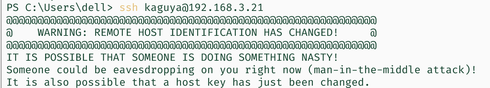

从源码更新 sshd
条评论之前爆出 Linux 上的 sshd 可能有一个 race condition 导致的 RCE。建议更新到 openssh 9.8。于是火速 clone 源码之后直接 make install 了。
但是今天在断电之后想扫一下办公室网络发现主机，觉得更新的人应该不多，随手就
1 | nmap -sV ip/24 -p 22 |
期待出一个 openssh 9.8，结果出来了一个别人的主机，自己的是没有。当然后来验证了其实是我的机器没有开，但我到了座位上之后，也是闲的蛋疼想看看 nmap 一下自己的设备到底能出些什么玩意。结果大为震撼，openssh-9.6p1 。。。
到底是谁发明的 ssh -V 验证版本更新成功法？这里面有另外？个变量：
- openssh 的安装目录
- systemd 的配置
- ssh 的编译参数
openssh 现在居然默认安装在 /usr/local。。。但是 systemd 当然只认 /usr/。
ssh 编译时如果不指定和当前版本一致的 config 目录，就。。不知道会是哪里。最后会导致 fingerprint changed & man in the middle attack。

配置文件目录变了之后，就不会用原来的 pubkey 作为 fingerprint 了
所以我们根据 OpenSSH-9.8p1 (linuxfromscratch.org) 的指导，重新编译了 openssh，并且小改 Makefile 进行了安装。
1 | ./configure --prefix=/usr \ |
更新：这样做会使得在 ssh client（ssh-session）中，PATH 没有 /usr/local/bin。导致自己编译安装的 vim 没办法直接启动。
解决办法：--with-default-path 和 --with-superuser-path 加一加。
更新：2FA 和登录邮件提醒消失了
解决：添加 --with-pam